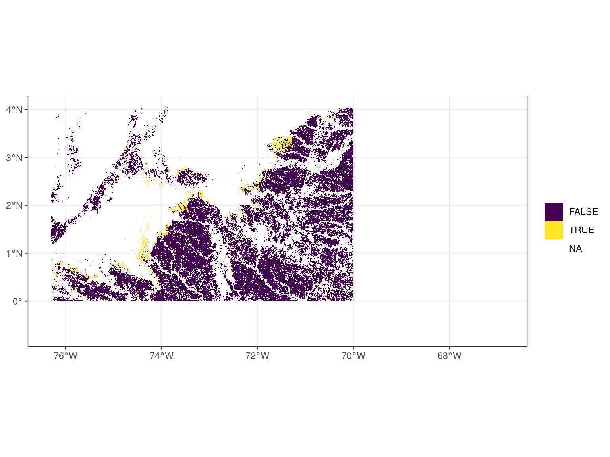
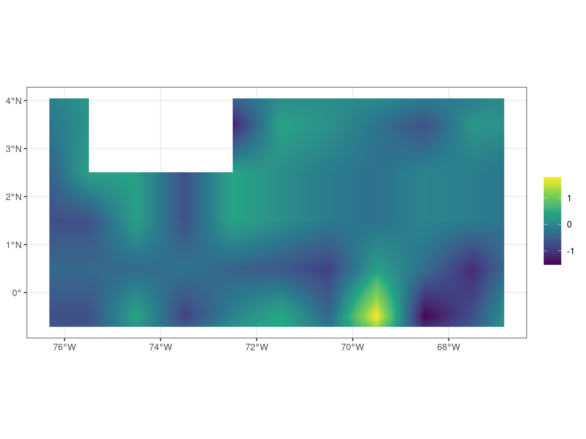
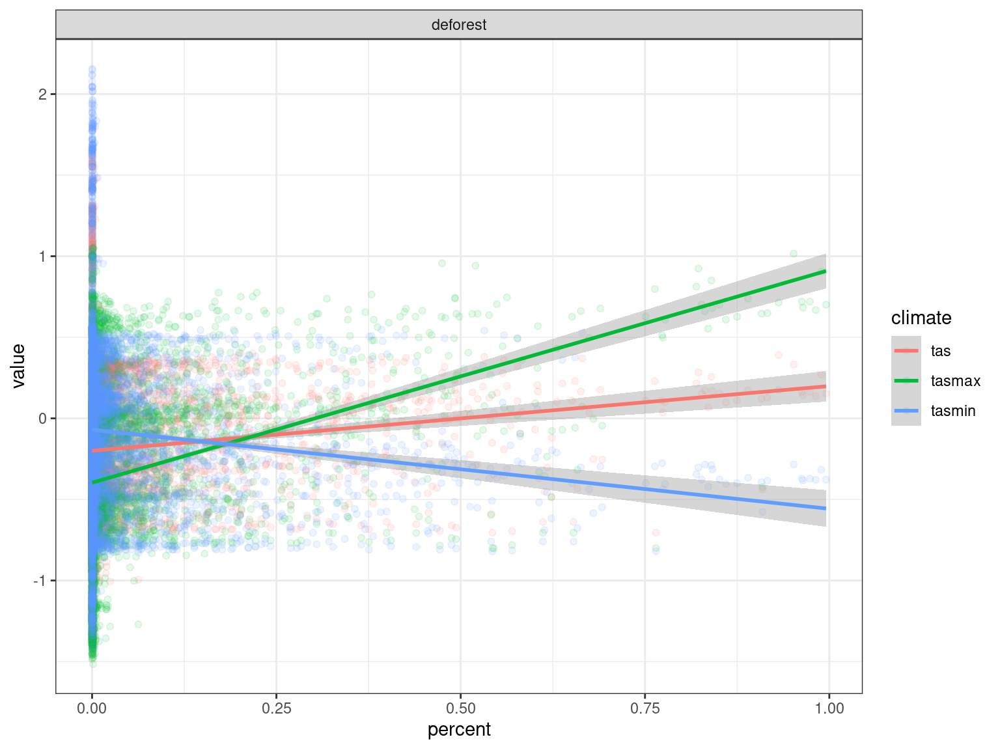
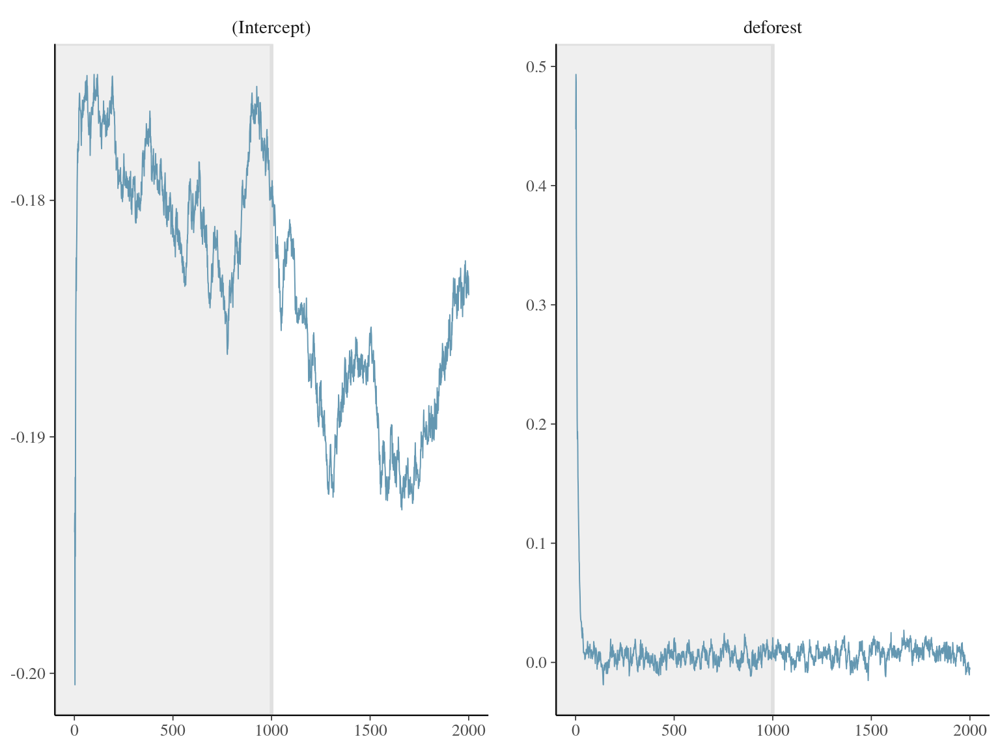
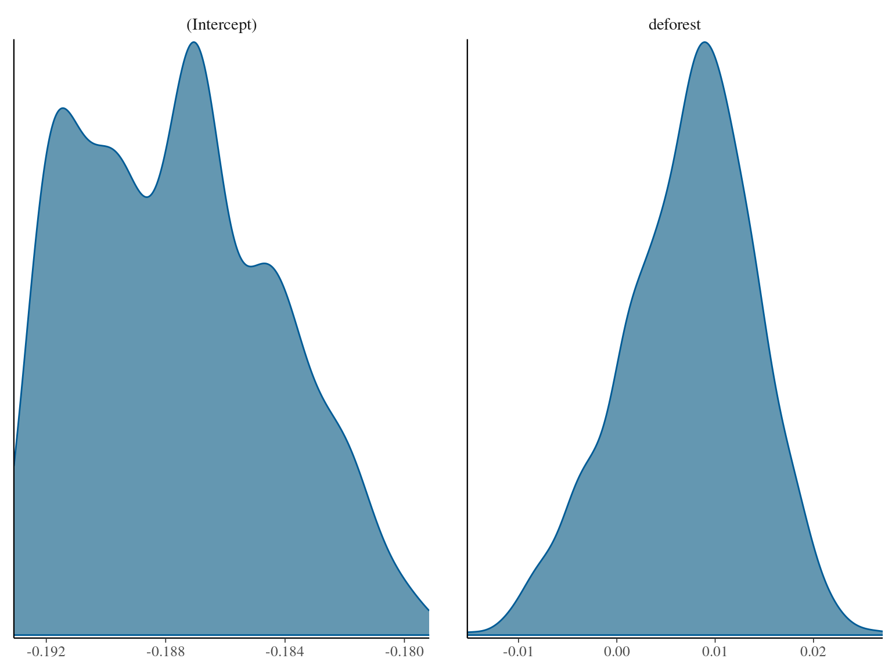
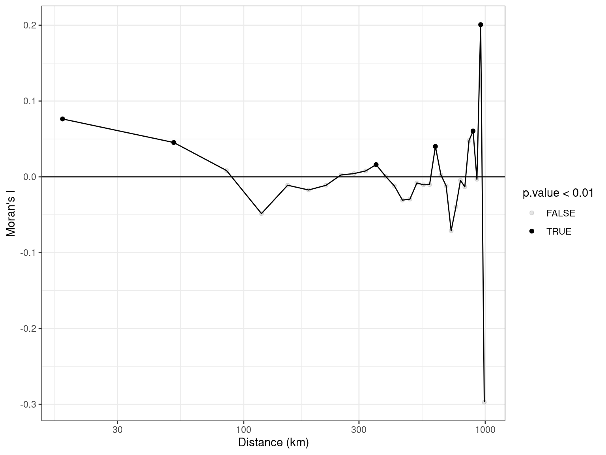

Reading layer `limits' from data source
`/home/sschmitt/Documents/ideas/results/limits/limits.shp'
using driver `ESRI Shapefile'
Simple feature collection with 3 features and 11 fields
Geometry type: POLYGON
Dimension: XY
Bounding box: xmin: -76.3064 ymin: -0.7056 xmax: -66.8377 ymax: 4.0452
CRS: NATemperature large



Call:
spNNGP(formula = tas ~ deforest, data = data, coords = data[c("x",
"y")], method = "latent", n.neighbors = 10, starting = list(phi = 3/0.5,
sigma.sq = 1, tau.sq = 1), tuning = list(phi = 0.2), priors = list(phi.Unif = c(3/1,
3/0.1), sigma.sq.IG = c(2, 1), tau.sq.IG = c(2, 1)), cov.model = "exponential",
n.samples = 2000, n.omp.threads = 20, return.neighbor.info = TRUE,
fit.rep = TRUE, sub.sample = list(start = 1000), n.report = 1000)
Model class is NNGP, method latent, family gaussian.
Model object contains 2000 MCMC samples.
Chain sub.sample:
start = 1000
end = 2000
thin = 1
samples size = 1001
2.5% 25% 50% 75% 97.5%
(Intercept) -0.1924 -0.1903 -0.1876 -0.1851 -0.1812
deforest -0.0069 0.0029 0.0080 0.0119 0.0191
sigma.sq 0.0081 0.0083 0.0084 0.0085 0.0088
tau.sq 0.0005 0.0005 0.0006 0.0006 0.0006
phi 3.0001 3.0003 3.0010 3.0025 3.0054 

